TPR's Northeast Trip
Bowcraft & NYC Coney Island Quassy Lake Compounce Six Flags New England
Palace Playland Funtown Splashtown
Canobie Lake Park
La Ronde
Great Escape
Six Flags Great Adventure
All right. Next morning was interesting since almost everyone had a hangover from the Alcohol Exchange last night. I'm wondering how many people Robb pissed off by simply speaking into the michrophone, though to them, that's be like Robb screaming into a megaphone. (Oddly, he hasn't done that yet.)
 Oh boy!!!! We're going to La Ronde today!!!! If you've read previous updates on this site, you'd know that La Ronde is one of our favorite parks ever. And since our last visit was just so great, I was really looking foreword to re-visiting this park.
Oh boy!!!! We're going to La Ronde today!!!! If you've read previous updates on this site, you'd know that La Ronde is one of our favorite parks ever. And since our last visit was just so great, I was really looking foreword to re-visiting this park.
La Ronde actually took us through the back entrance and we parked the bus right beside Le Monstre. That was pretty cool.
 And our morning started out with Morning ERT on Goliath. Did I just go into a parallel universe because I'm at La Ronde and happy at the same time.
And our morning started out with Morning ERT on Goliath. Did I just go into a parallel universe because I'm at La Ronde and happy at the same time.
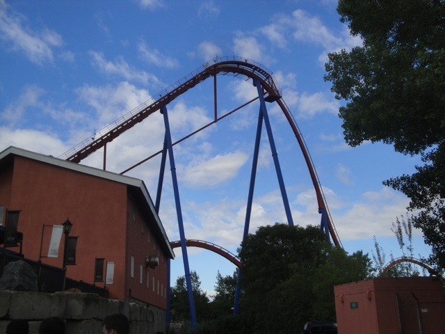
La Ronde Goliath was just as floaty as I remember it. It's great for floater air, it's view of Montreal and saying "Wee!!!", but there are definetly much better coasters out there.
"Not yet guys!!! The floater air doesn't come until the first drop!!!"
 "Shh. Don't tell Britney that I'm doing Canadian Coke ads with this other beautiful woman. I'm still trying to convert her to Veganism."
"Shh. Don't tell Britney that I'm doing Canadian Coke ads with this other beautiful woman. I'm still trying to convert her to Veganism."
 Oh yeah. We also had ERT on Le Monstre.
Oh yeah. We also had ERT on Le Monstre.
Hey. At least I'm not waiting 45 minutes for it like I had to back in 2008.
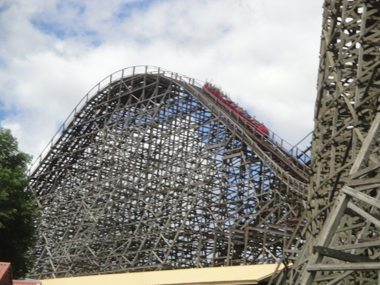
OMG!!!! SO BETTER THAN X2!!!!! *rolls eyes*
 See, these are some of the cool angles we were able to get due to our bus's awesome location.
See, these are some of the cool angles we were able to get due to our bus's awesome location.
Oh sh*t. Our ERT has ended and the La Ronde GP have rolled in. Yeah, this is more of the La Ronde I remember.
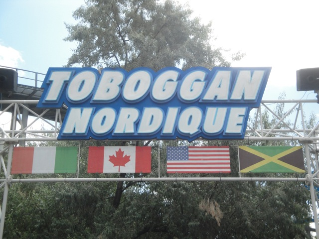
Quick!!! Let's get the Wild Mouse credit out of the way before the insane crowds swarm it.
 *Phew* Just barely missed those crowds. Hello other TPR friends who got stuck way back there!!!! =)
*Phew* Just barely missed those crowds. Hello other TPR friends who got stuck way back there!!!! =)
 It was a lame mouse, but at least I got the credit this time!!!
It was a lame mouse, but at least I got the credit this time!!!
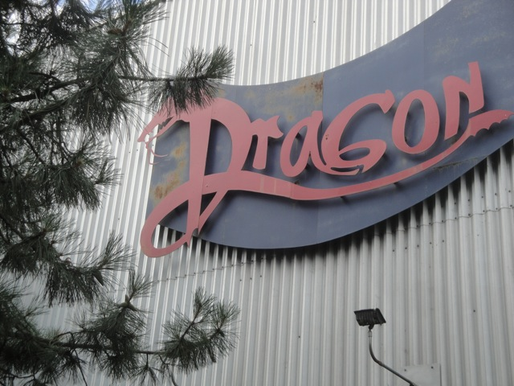
Continuing on with the theme of getting La Ronde credits I don't have, up next was the indoor coaster Dragon.
 It was a werid little indoor coaster. But definetly not worth the average 30-45 minute wait that it typically gets.
It was a werid little indoor coaster. But definetly not worth the average 30-45 minute wait that it typically gets.
 Since my last visit, La Ronde has gotten the SLC from Six Flags Astroworld.
Since my last visit, La Ronde has gotten the SLC from Six Flags Astroworld.
Meh, for the Fastpass line, that doesn't seem so bad.
 This SLC was bad. REALLY BAD!!!!! While not quite as bad as Kong, it's still pretty damn wretched and not something I would want to ride again.
This SLC was bad. REALLY BAD!!!!! While not quite as bad as Kong, it's still pretty damn wretched and not something I would want to ride again.
 Though I must admit, it does look nice over the water.
Though I must admit, it does look nice over the water.
Yes, you are reading that correctly. With the Q Bot waiting in that line you just saw a couple pictures up, it almost took us 31 minutes. 31 F*CKING MINUTES!!!!!! And we got there early in the morning before the crowds came. I heard other people with flashpass had to wait an hour with fastpass. Way to go La Ronde!!! I can now see just how much you've improved in your operations!!!!
 Well well well Vampire. Look who came back?
Well well well Vampire. Look who came back?
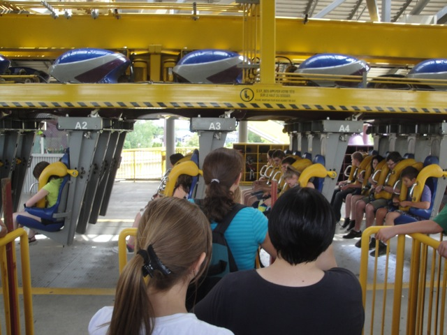
"I did it!!! I finally got all of the La Ronde credits!!!! In your face!!!! In your face La Ronde!!!!!" =)
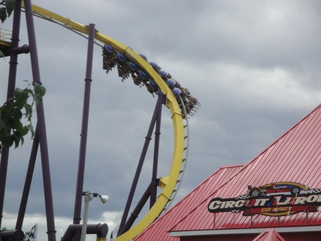
So just how good is Canadian Batman?
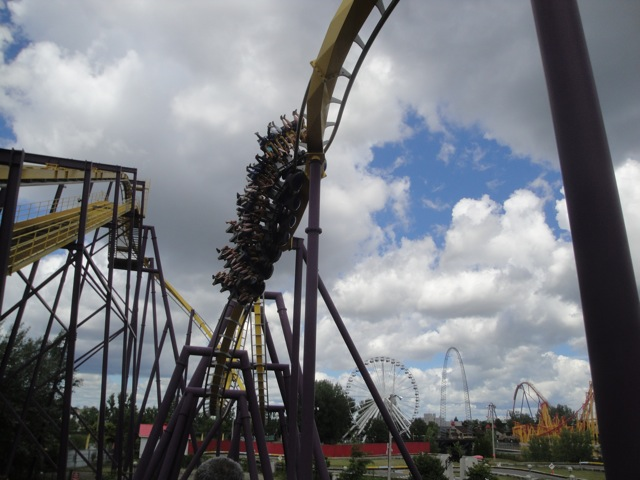
Dude!!! This ride KICKED ASS!!!!! Definetly the best Batman Clone I have ever been on. It was just so strong!!!!
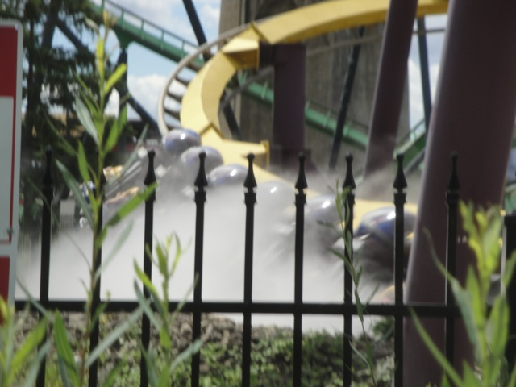
Oh yeah. And this Batman Clone has mist. Which really works well for this ride.
 Up next, we took a ride on what I consider to be one of the most underrated coasters of all time, Cobra @ La Ronde.
Up next, we took a ride on what I consider to be one of the most underrated coasters of all time, Cobra @ La Ronde.
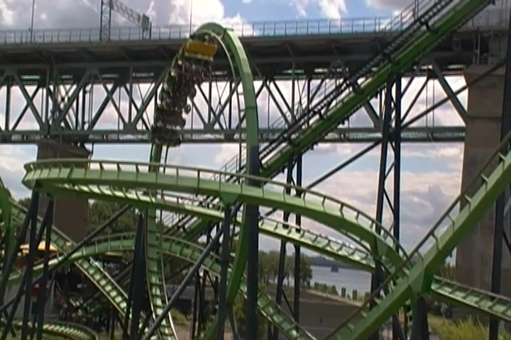
Unfortunetly, Cobra really went downhill in the past 3 years. It's got more headbanging and seemed tamer in the 2nd Half. =(
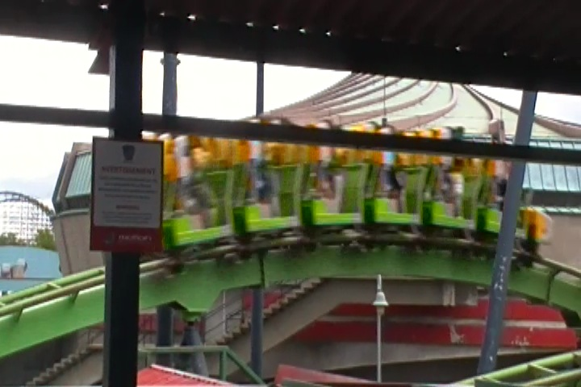
However, despite that, I'd still consider it to be one of the more underrated coasters since it's still a really good ride with a wild 1st half and of course, that pop of strong ejector air.
Sweet!!! Time for lunch!!! I wonder what they'll be serving us?
Aww. More typical amusement park crap. While not bad, I do wish that we could've gotten some French Canadian Food that we can't get in America, but oh well.
 After lunch, we decided to head up into the observation tower to get some ariel shots of La Ronde.
After lunch, we decided to head up into the observation tower to get some ariel shots of La Ronde.
 Yeah. Le Monstre may be a big ride, but it really doesn't do too much.
Yeah. Le Monstre may be a big ride, but it really doesn't do too much.
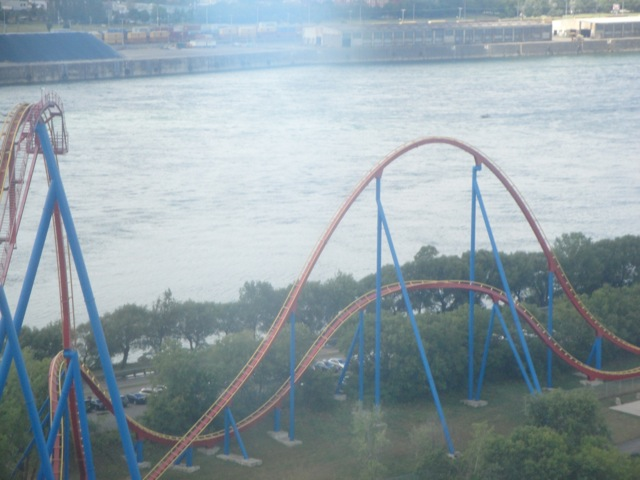
Great ride in a great setting.
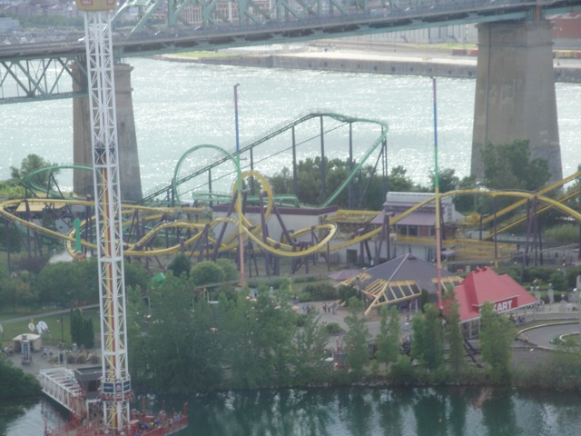
I do have to admit that La Ronde does have one of my favorite settings of any amusement park.
Yeah. We got on the Vekoma Corkscrew. Meh, it was nothing special.
 Aww. The Boomerang is clo...Wait, why the hell do I care? I have this credit.
Aww. The Boomerang is clo...Wait, why the hell do I care? I have this credit.
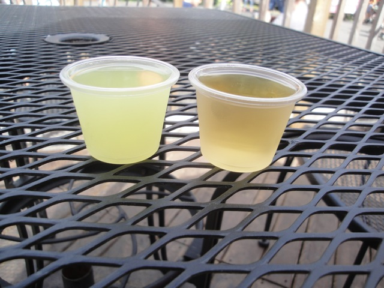
All right. Several things about this photo are awesome. First of all, they just sell hard liquor right on the midways of La Ronde (Maybe this is causing the sh*tty operations). No American Park would ever even think of doing this so that's awesome. Second of all, in America, if you're like under 60, they'll card you. But here in Canada, they didn't even card me. I just got these shots, gave them my monopoly money, and gulped down two tasty shots. I love Canada.
Everyone start singing the Monorail Song from the Simpsons.
Since we actually had time to kill, we checked out some of La Ronde's flat rides.
Yeah, this park has a really good setting.
 I heard a lot of people calling this the greatest space shot they ever rode. And it's fun and all, but greatest Space Shot ever? COME ON!!!!
I heard a lot of people calling this the greatest space shot they ever rode. And it's fun and all, but greatest Space Shot ever? COME ON!!!!
Here's a little tip. Never expect to get on a La Ronde ride quickly. We had 20 minutes till we had to leave and thought we could squeeze in a ride on the Breakdance. BIG MISTAKE!!! We had to run back to the Q bot return spot and back to the bus.
Hello Great Escape. We'll see you tomorrow.
And for dinner, we had a private party at Unos. (Interesting little fact. I've only eaten at Unos twice in my life. Both of which have been THIS EXACT UNOS IN LAKE GEORGE NY!!!!! I also ate dinner here after going to the Great Escape on the North of the Border Trip. Freaky, huh.)
 Aww. The Oiho sign is now gone. =(
Aww. The Oiho sign is now gone. =(
The dinner was freaking awesome. I love Unos. We need to get this chain in California NOW!!!!
And after a great dinner, we went and had some fun inside Walmart.
"Umm...Am I supposed to take these shoes or what?"
This trip is really taking it's toll on me. Better make my blood pressure isn't gonna go through the roof.
Great Escape